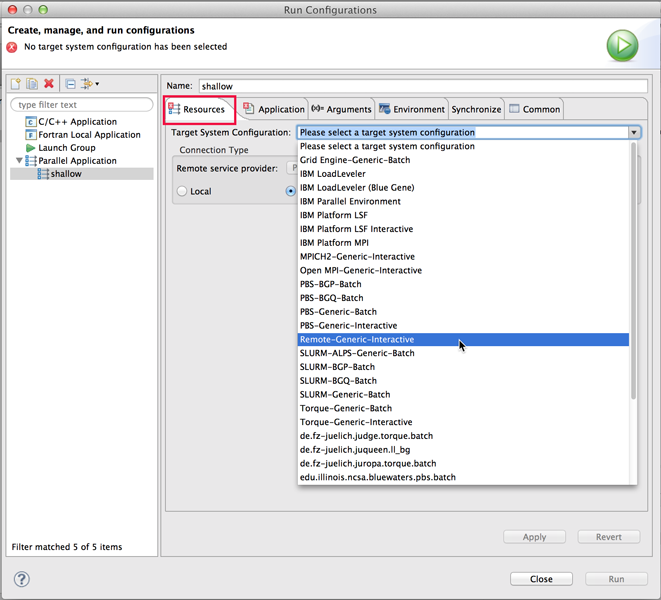
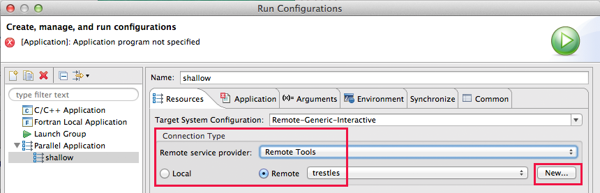
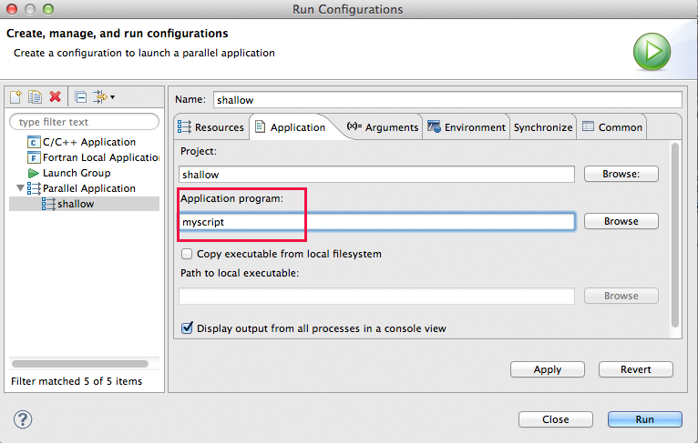
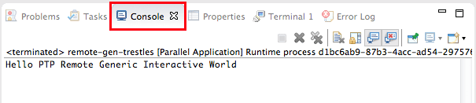

This section describes how to set up a run configuration using the "Remote Generic Interactive" as a target system configuration for the Parallel Tools Platform (PTP).
This target system configuration (TSC) is a simple way to launch a job on a remote system, not especially a parallel job.
As described in Running Parallel Programs, create a run configuration via Run > Run Configurations ... and create a new Parallel Application.
The specifics for running the remote program with PTP are specified on the Resources tab of the run configuration. For Target System Configuration, select Remote-Generic-Interactive

Then specify a connection. If you have already specified a connection, e.g. for a Synchronized Project or a remote project, you can select it, or you can create a new connection at this point with the New... button.

For how to create a connection, see Creating Remote Connections and Local Connections
Note: To edit connection information after a connection has been created, e.g. to change user name or password, see Editing Remote Connections.
After selecting a Connection, it will ask to run a command on the system. Select Yes to continue. Check the Don't ask to run command again for this configuration to avoid being asked again for this launch configuration. The information from the command results are generally used to populate information on the dialog.
On the Application tab (as described in run configuration setup for running your parallel application), for the Remote-Generic-Interactive target system configuration, the application name shouldn't be the executable name, but a run script that is provided by the user.
#!/bin/bash # hello.sh echo "Hello PTP Remote Generic Interactive World"

Select the Run button to execute the script. The results from this simple "hello world" script are shown in the Console view at the bottom of the workbench window.
